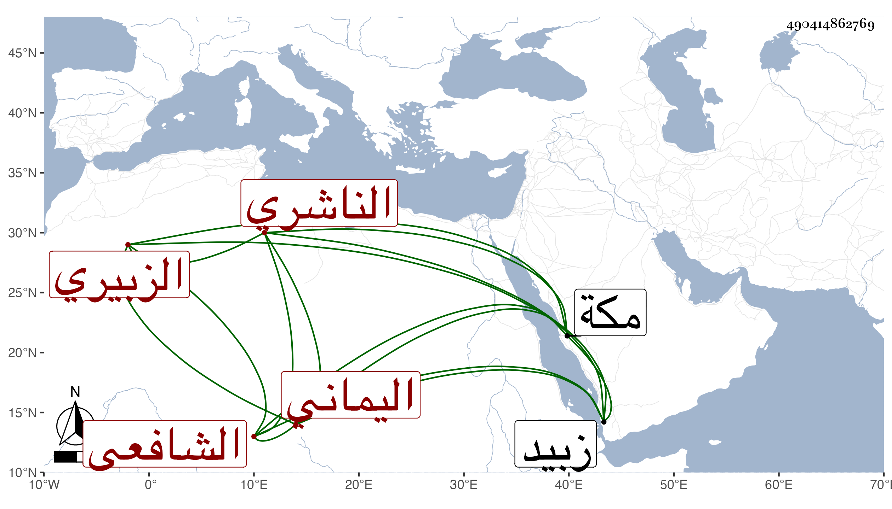

0902Sakhawi.DawLamic.ITO20230111-ara1.EIS1600.490414862769
Biography ID: 490414862769
74
محمد بن عبد السلام ويسمى أيضا عمر بن أبي بكر بن محمد الجمال أبو عبد الله بن العز أو التقي بن الفقيه الزبيري اليماني الناشري الشافعي أحد قضاة زبيد . أرسل إلي في سنة ست وثمانين وأنا بمكة كتابا يستدعي مني الإجازة له ولولديه الموفق على السباعي وعبد السلام المولود في سنته فكتبت له كراسة بل كتب إلي في سنة سبع وتسعين يسأل عن أشياء وكتبت له جوابها .
